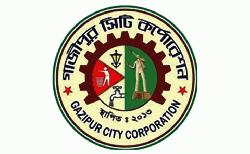
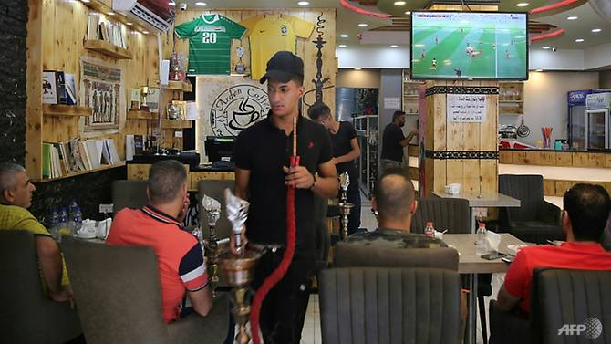
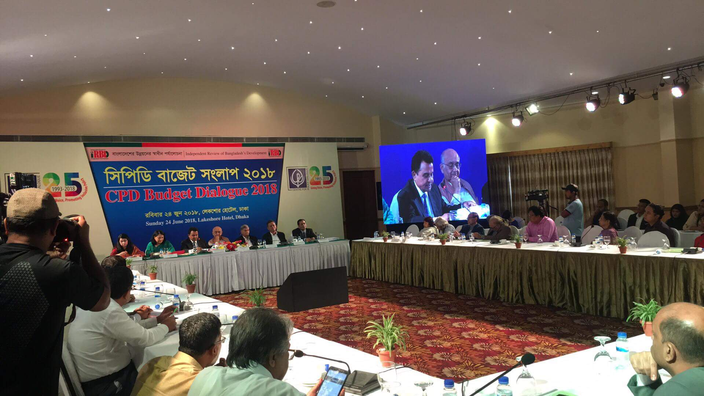
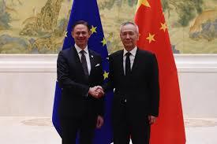

Dhaka Stock Exchange
Dhaka Stock Exchange (DSE) witnessed the fourth trading day of the week with upward trend on Wednesday. In Dhaka Stock Exchange (DSE), turnover, an important indicator of the market, stood at Tk 703.51 crore. The DSEX in the country's main bourse stood at 5,429 points increasing 17 points. The DSE Shariah Index (DSES) reached at 1,266 points rose 6 points. The DS30 index also increased 2 points to stand6 1,968 points. Of the issues traded today, 191 advanced, 107 declined and 41 remained unchanged. Chittagong Stock Exchange (CSE) also stood at Tk 41.24 crore today. Dhaka Stock Exchange (DSE) ended the first trading day of the week with extensive rise on Sunday. In Dhaka Stock Exchange (DSE), turnover, an important indicator of the market, stood at Tk 711.54 crore. The DSEX in the country's main bourse stood at 5,521 points increasing 80 points. The DSE Shariah Index (DSES) reached at 1,278 points rose 15 points. The DS30 index also rising 28 points to stand 2,010 points. Of the issues traded today, 193 advanced, 100 declined and 47 remained unchanged. Chittagong Stock Exchange (CSE) also stood at Tk 56.22 crore today. Selective Category Index - CSCX - rose 201 points to stand 16,987 points. Of the issues traded, 140 gained, 87 declined and 24 remained unchanged.
BNP seeks Gazipur police chief’s withdrawal
“We come here every day to watch the games, mainly for economic reasons,” he told AFP, bemoaning the cost of the pay TV subscription. With Salah’s Egypt eliminated, Hassan will now cheer on Messi’s Argentina and Spain, even while he dreams of Iraq one day making a first World Cup finals appearance since Mexico ’86. ‘It costs less’ In Mosul, 350 kilometres (220 miles) north of Baghdad, just being permitted to watch football marks a fresh dawn — for three years to July 2017, Iraq’s second city was occupied by the Islamic State group. Mirroring the capital, people have crammed into cafes to watch games, happy at last to imbibe images the jihadists deemed corrupting. “Here, it costs less,” said 21-year-old Amir Mufak, another Iraqi who can’t afford to sustain his passion by watching at home. “We pay only for our drinks — the fun is free.” But Mohammed al-Ashrini is upset that the government has not put on a show for its citizens. “Some countries buy rights to the World Cup and the matches are transmitted free on a local channel, for th
With the World Cup
With the World Cup in full swing, people around the globe are glued to TV screens-but for some Iraqis, absorbing the full experience is proving trickier than confronting Lionel Messi on an epic dribble. At around $100 (85 euros), a pay TV subscription for the month-long football extravaganza is out of reach for most, as average monthly salaries range between $400 and $700. But some are airing the games and even profiting from the action. In a central Baghdad cafe, Hassan al-Sayyed has installed a big screen, AFP reports. He hopes to fill his premises for every game, ramping up takings from those unable to afford the “very high” cost of home subscriptions. One of the biggest pulls so far has been Egypt’s second group game — a chance to see the Arab world’s most famous footballer Mohamed Salah make his tournament debut. Hookah smoke swirling around him, Mohammed Hassan was one of many to cheer on the Liverpool ace during the Pharaohs’ 3-1 loss to Russia. “We come here every day to watch the games, mainly for economic reasons,” he told AFP, bemoaning the cost of the pay TV subscription. With Salah’s Egypt eliminated, Hassan will now cheer on Messi’s Argentina and Spain, even while he dreams of Iraq one day making a first World Cup finals appearance since Mexico ’86. ‘It costs less’
Economy suffering like diabetic patient, says ex-NBR chiefl
Besides, Taka 1,868 crore 60 lakh and 95 thousand was sanctioned for local government division under Local Government, Rural Development and Cooperatives Ministry, Taka 1,182 crore 64 lakh and 55 thousand for Road Transport and Highways Division under Road Transport and Bridges Ministry, Taka 1,162 crore, 42 lakh and 23 thousand for economic relation division, Taka 1,109 crore, 11 lakh and 1 thousand for Security Services Division under the Ministry of Home Affairs, Taka 471 crore, 96 lakh and 21 thousand for Public Administration Ministry, Taka 5 crore, 54 lakh and 46 thousand for Public Service Commission under Public Administration Ministry, Taka 11 crore, 83 lakh and 18 thousand for Implementation, Monitoring and Evaluation Division under Planning Ministry, Taka 50 crore, 91 lakh and 75 thousand for Statistics and Information Management Division, Taka 28 crore, 60 lakh and 31 thousand for Foreign Ministry, Taka 659 crore 93 lakh and 30 thousand for Defence Ministry, Taka 56 crore 33 lakh and 86 thousand for Law and Justice and Taka 4 crore, 1 lakh and 87 thousand for Legislative and Parliamentary Affairs Ministry Division under Law, Justice and Parliamentary Affairs Ministry, Taka 57 crore 34 lakh and 63 thousand for the Ministry of Women and Children Affairs, Taka 49 crore 80 lakh and 79 for Housing and Public Works Ministry, Taka 315 crore, 78 lakh and 72 thousand for Religious Affairs Ministry, Taka 311 crore, 51 lakh and 49 thousand for Rural Development and Cooperatives Division under LGRD and Cooperatives Ministry, Taka 91 crore 66 lakh and 57 thousand for Land Ministry, Taka 173 crore 77 lakh and 36 for Shipping Ministry, Taka 93 crore 23 lakh and 71 thousand for Chittagong Hill Tracts Ministry, Taka 3 crore 13 lakh and 64 thousand for Supreme Court, Taka 162 crore 61 lakh and 86 thousand for Health Education and Family Welfare Division under Health and Family Welfare Ministry.
Beijing
Beijing : The European Union and China pledged on Monday to uphold a rules-based international trade system, making an oblique criticism of growing protectionism in Washington despite their own disagreements. The two sides held high-level economic meetings in Beijing as both face rising trade tensions with the United States. Brussels and Beijing recently announced new tariffs on US goods in retaliation for moves by the Trump administration. “Both sides agreed to resolutely oppose unilateralism and protectionism and prevent such practices from impacting the world economy and even dragging the world economy into recession,” said Chinese Vice Premier Liu He, responsible for shepherding the world’s second largest economy. Liu had led China’s three rounds of trade talks with the US, negotiations that have broken down over the Trump administration’s pledge to move forward with tariffs despite an agreement in May to put the duties on hold. “Unilateralism and trade protectionism is on the rise and tensions have appeared in the economic relations between major economies,” Liu told an audience of European and Chinese officials. European Commission Vice President Jyrki Katainen echoed Liu’s words, describing the World Trade Organization “as the centre of the rules-based international our near and dear ones can support us to have a clear and conclusive condition of our life. And parents are more than that obviously.
ROUND:37
ID:1244255
E-mail:juitrishadewan@gmail.com
TSP:CCLS//J2EE_ PROGRAMMAR